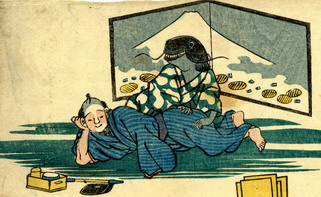

鯰が横たわった男の足腰をもんでいる。鯰は緑地に白い瓢箪柄の着物を着ており、袖から出ている腕は黒いが、人間のものである。後ろには富士山と小判が描かれた屏風が立っている。
出典：親書誌：U426_nichibunken_0162：しん坂あんしん物；シンパンアンシンモノ／日付：2010／資源識別子：U426_nichibunken_0162_0001_0000
Copyright (c)2010- International Research Center for Japanese Studies, Kyoto, Japan. All rights reserved.